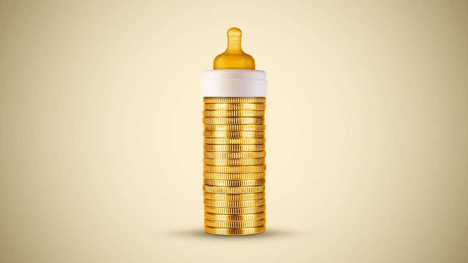

Two cheers for Trump Accounts
The grubby scheme contains the seeds of a good idea
July 9th 2026

Donald Trump likes putting his name on things, from Manhattan skyscrapers (with permission) to Washington’s Kennedy Centre (without). From July 4th Americans have started seeing the president’s name show up in their children’s financial statements. Babies born between 2025 and 2028 are getting “Trump Accounts”: $1,000 invested in American stocks, which will be theirs to spend when they turn 18. Some billionaires and big companies have donated top-ups, and parents can make their own contributions.
The name is not the only Trumpy thing about the new handouts: they are also partisan, grubby and funded mostly by borrowing. Only babies who are born from 2025 onward, when Mr Trump returned to the White House, will qualify. Roping in America’s wealthiest to chip in alongside the taxpayer carries a whiff of the cronyism that is sadly too familiar in today’s Washington.
However, beneath the unsavoury execution there sits an experiment worth watching. The idea of giving children equity stakes in the economy is sound in principle. It is also well-timed, as societies face up to the looming economic disruption from artificial intelligence.
So far, the scale of this experiment is, admittedly, rather small. The $1,000 each child receives could be worth around $4,500 by the time they turn 18, which is more like $3,000 in today’s prices. Still, it could make a modest but helpful dent in a deposit for a home or car, or in university fees. Many young people already rely on handouts to help buy their first home, but how much they get depends largely on how deep their parents’ pockets are. This undermines the notion that working hard is enough to succeed, a principle without which public support for free markets wanes.
Indeed, a troublingly high share of young people profess to feel more enthusiasm for socialism than capitalism. The Economist has spotted a worrying rise in what we call “Gen-Z socialism”, a politics that combines soaking the rich with calls for price controls on everything from rental housing to groceries. Winning the next generation back to the side of free enterprise may require giving them a personal stake in the private sector that goes beyond the labour market.
Compared with other rich countries, America has already done a good job of making investors of everybody: the poorest fifth of Americans have 15% of their assets in stocks, versus just 3% in 1990. Trump Accounts could build on that start by offering a national lesson in financial literacy as children and families watch their money grow.
The experiment is particularly useful preparation for the turmoil that the spread of ai may bring. The more radical forecasts for AI’s economic effects involve vast returns for capital-holders and a tough time for workers. Under that scenario, a direct and highly visible public stake in the technology might be necessary to forestall runaway inequality and political instability.
Instead of the government running the show of managing, say, the 5% of OpenAI that Sam Altman has suggested handing over, shares could be passed along to citizens via Trump-like accounts. Even if ai does not make capital eclipse labour, the mechanism could encourage a healthy new form of philanthropy in which some billionaires voluntarily pass on parts of their fortunes to all Americans.
The scheme’s deficit-financing is not ideal, but at least the borrowing funds savings rather than—as with most government handouts—immediate consumption. In any case, at its current size the effect of the scheme on the deficit is microscopic: 0.005% of annual gdp. So Trump Accounts get two cheers from The Economist. We hope they outlast the president’s term—and that his successor sorts out a name for them that Democrats and Republicans alike can get behind. ■
Subscribers to The Economist can sign up to our Opinion newsletter, which brings together the best of our leaders, columns, guest essays and reader correspondence.